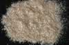

|
|
(For further information on spectroscopy, see:
http://speclab.cr.usgs.gov)
TITLE: Phlogopite HS23 DESCRIPT
DOCUMENTATION_FORMAT: MINERAL
SAMPLE_ID: HS23
MINERAL_TYPE: Phyllosilicate
MINERAL: Phlogopite (Mica group)
FORMULA: KMg3Si3AlO10(F,OH)2
FORMULA_HTML: KMg3Si3AlO10(F,OH)2
COLLECTION_LOCALITY: Ontario
ORIGINAL_DONOR: Hunt and Salisbury Collection
CURRENT_SAMPLE_LOCATION: USGS Denver Spectroscopy Laboratory
ULTIMATE_SAMPLE_LOCATION: USGS Denver Spectroscopy Laboratory
SAMPLE_DESCRIPTION:
Forms series with Biotite.
"P-15 Phlogopite 23B--Ontario. K2(Mg, Fe2+)6- (Si6Al2P20)(OH, F)4. Phlogopite occurs most commonly in metamorphosed limestone's and in ultrabasic rocks. It is difficult to obtain a reliable spectrum from this sample because of interference bands. The spectrum falls off quite steadily from 2.0µ into the blue of the visible, although no electronic features are well resolved. The absorption is, however, due to generalized absorption by both Fe2+ and Fe3+, the latter substituting for Al. The important features in the spectrum are the OH vibrational features at 1.38µ, 2.325µ, and 2.385µ. The latter two features are displaced from the location of the most intense bands in the other micas, as a result of the trioctahedral structure which provides for the domination of the MgOH bending modes combinations rather than the AlOH bending modes in the dioctahedral micas. However, there is still evidence for the possibility of some AlOH bending mode combination displayed by the weak features near 2.2µ, being present although these features could be due to the more common OH-lattice combinations."
Hunt, G.R., J.W. Salisbury, and C.J. Lenhoff, 1973, Visible and near-infrared spectra of minerals and rocks: VI. Additional silicates. Modern Geology, v. 4, p. 85-106.
IMAGE_OF_SAMPLE:

END_SAMPLE_DESCRIPTION.
XRD_ANALYSIS:
Phlogopite - pure. Spectrally pure. (Norma Vergo)
END_XRD_ANALYSIS.
COMPOSITIONAL_ANALYSIS_TYPE: EM(WDA) # XRF, EM(WDS), ICP(Trace), WChem
| COMPOSITION KEYWORD |
Oxide ASCII |
Amount | Weight Percent, % |
Oxide html |
|---|---|---|---|---|
| COMPOSITION: | SiO2 | 39.690 | wt% | SiO2 |
| COMPOSITION: | TiO2 | 1.233 | wt% | TiO2 |
| COMPOSITION: | Al2O3 | 14.350 | wt% | Al2O3 |
| COMPOSITION: | FeO | 1.799 | wt% | FeO |
| COMPOSITION: | MnO | .0285 | wt% | MnO |
| COMPOSITION: | MgO | 25.540 | wt% | MgO |
| COMPOSITION: | CaO | 0.015 | wt% | CaO |
| COMPOSITION: | Na2O | 0.262 | wt% | Na2O |
| COMPOSITION: | K2O | 10.020 | wt% | K2O |
| COMPOSITION: | Cl | 0.072 | wt% | Cl |
| COMPOSITION: | F | 3.864 | wt% | F |
| COMPOSITION: | Total | 96.874 | wt% | |
| COMPOSITION: | O=Cl,F,S | 1.643 | wt% | #correction for Cl, F, S |
| COMPOSITION: | New Total | 95.231 | wt% |
COMPOSITION_TRACE: None
COMPOSITION_DISCUSSION:
average of 6 spot analyses
END_COMPOSITION_DISCUSSION.
MICROSCOPIC_EXAMINATION:
END_MICROSCOPIC_EXAMINATION.
SPECTROSCOPIC_DISCUSSION:
END_SPECTROSCOPIC_DISCUSSION.
SPECTRAL_PURITY: 1b2b3b4b # 1= 0.2-3, 2= 1.5-6, 3= 6-25, 4= 20-150 microns
| LIB_SPECTRA_HED: | where | Wave Range | Av_Rs_Pwr | Comment |
|---|---|---|---|---|
| LIB_SPECTRA: | splib04a r 3874 | 0.2-3.0µm | 200 | g.s.= |
| LIB_SPECTRA: | splib05a r 5401 | 0.2-3.0µm | 200 | g.s.= |
| LIB_SPECTRA: | splib06a r 17673 | g.s.= | ||
| LIB_SPECTRA: | splib06a r 17687 | g.s.= |
{kind=link}